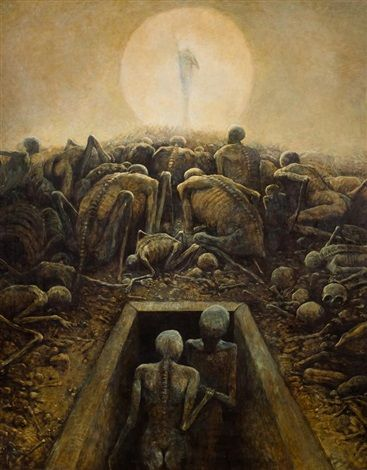
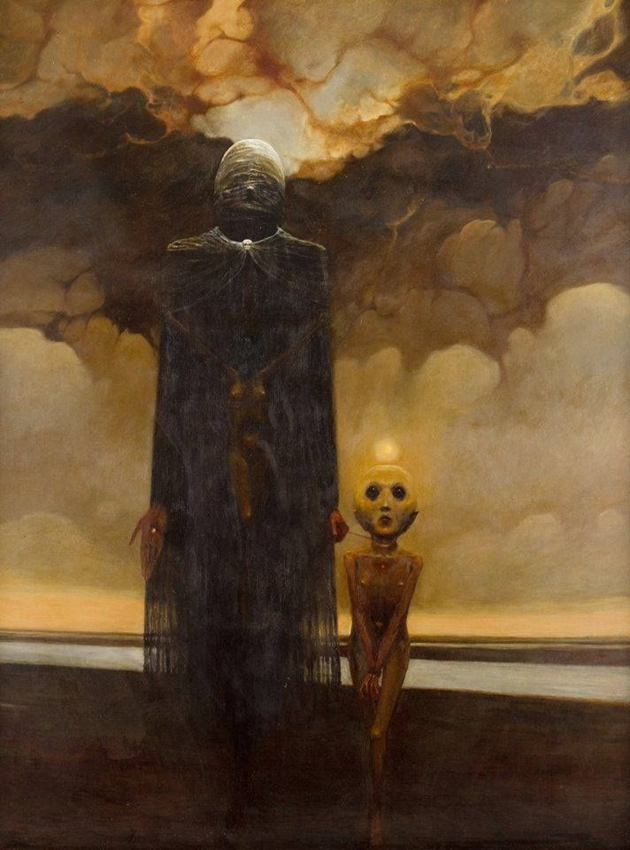
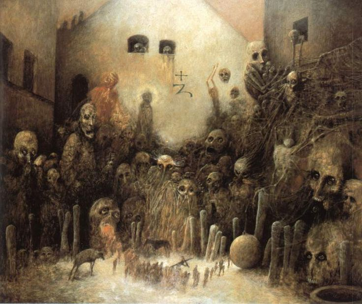

Quien es Zdzisław Beksiński ?
Zdzisław Beksiński (Sanok, Polonia, 24 de febrero de 1929-Varsovia, 21 de febrero de 2005) fue un pintor, fotógrafo y escultor polaco.
Ejecutó sus dibujos y pinturas de un género que él mismo llamó barroco o gótico. El primer estilo es dominado por la representación, los mejores ejemplos vienen de su periodo de realismo fantástico, cuando pintó imágenes distorsionadas de un ambiente surrealista y de pesadilla
El segundo estilo es más abstracto, con las características principales del formalismo. Después de estudiar arquitectura en Cracovia, regresó a Sanok en 1955. Posterior a esta formación, trabajó varios años como supervisor en la construcción, labor que odiaba profundamente
En esa misma época, se estaba empezando a interesar en la fotografía, el fotomontaje, la escultura y la pintura, realizando sus esculturas en plástico, metal y alambre mientras su fotografía inicialmente inspirada en el surrealismo francés muestra varios temas que después aparecerán también en sus futuras pinturas, presentando rostros arrugados, paisajes y objetos con texturas agitadas, en los que enfatizó especialmente la manipulación de luces y sombras
Su fotografía además describía imágenes inquietantes, tales como muñecas mutiladas con sus caras arrancadas, retratos de personas sin rostro o con la cara envuelta en vendajes. Más tarde, se concentró en la pintura. Sus primeras pinturas fueron de arte abstracto, pero a lo largo de la década de 1960 sus inspiraciones surrealistas fueron más visibles.
A continuacion algunas de sus obras
| Dissolution | IV | Unknown | ShowTime |
|---|---|---|---|
|  |

|
 |  |